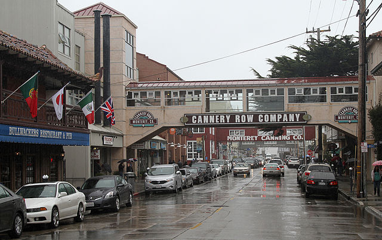
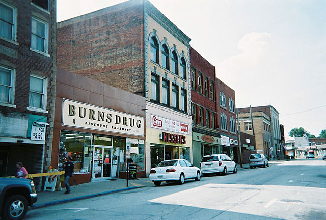
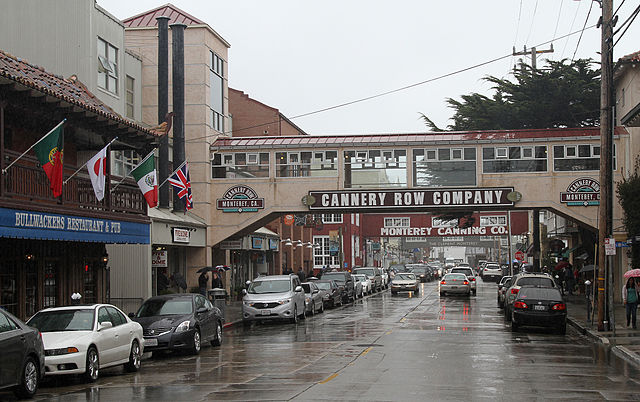
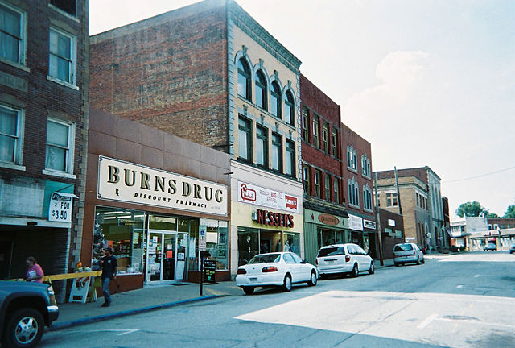
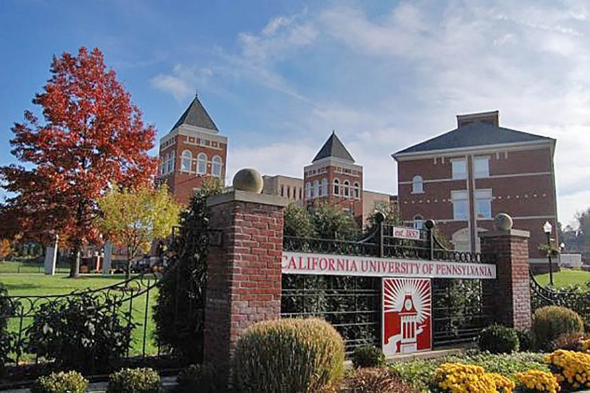
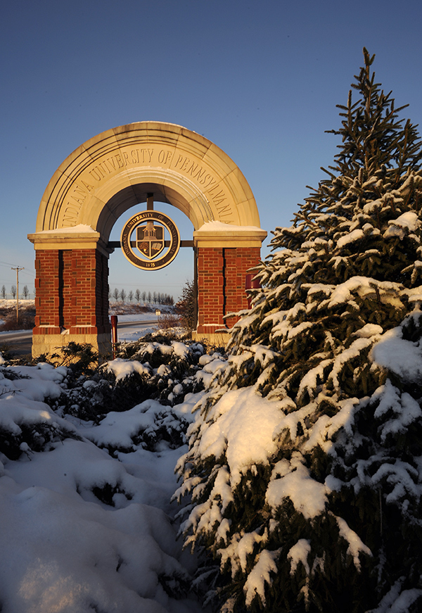

A lot of my thinking now is influenced by the life I have led, or didn't lead in my youth. But, let's get some details out of the way. I was born in the 90s in Berlin, Germany. After the wall came down, but before the country re-unified as a whole. Shortly after, my family returned state-side, and I was unable to take the language with me. Something about it being too heavy for the flight (Anyone who has studied German knows how beautiful of a language it is). From there, I lived in California on the Monterey Bay. For persepctive, it's approx. 100mi. (approx 160km for those who prefer metric) south of the San Francisco Bay area. It was an area with a diverse population courtesy of the military and Defense Language Institute presence. However, my time there was short and we found ourselves in Pennsylvania, at the bottom of Westmoreland county in Scottdale. I was always a child who thought about what could have been and what wasn't. This is something I still think about now, but use to motivate myself to do better academically. For undergraduate, I attended California University of Pennsylvania (Cal U) and pursued a degree in secondary education and English. However, I came out with the BA in English Language & Literacy and took time away from school to work while I figured out where to go with my life and degree.
 

In those two years above, I worked as a convenience store clerk (And eventually head clerk) and then a hotel front desk agent. However, I found myself wanting to return to academia, now with a renewed passion... even if my beginning was bleak. Having been accepted to Indiana University of Pennaylvania's (IUP) MA Composition & Literature program, I entered with the goal of working in the community colleges as an instructor, but am now seeking to pursue further professional interests by applying to the PhD program here at IUP. Though, I was unsure how I would specialize because I hadn't developed a literay interest and was still on the fence going into video games. I always had queer literature on the back of my mind but was resistant for a number of reasons because of my own philosophy regarding the presentation of queer elements (I'm openly gay and get looks when I talk about personal apprehensions toward going into the study. It's the idea of becoming a spokesperson for LGBT people as, being in a semi-small town, I was the only queer person many people knew and found myself having to fight stereotypes and outdated thinking). After taking Dr. Mattew Vetter's "Teaching Writing" class, though, I was presented with the opportunity to begin studying the queer from a composition perspective. My other interest areas were furthered by being given the opportunity to study video games and young adult courtesy of Drs. Mike Sell and Emily Wender (Respectively). It was in these classes I was shown the different forms and ideals that these concepts take, which piqued my interests further. As of this writing, I am about to graduate from the MA program and pursue further opportunity.
As for side interests, I am a fan of electronic music and driving around to enjoy the scenery. Pittsburgh traffic does not phase me. I also have an interest in learning German and Spanish (The former because of my origin and the latter out of sheer interest) and find myself interested in how localizations and translations of games work. Speaking of, my favorite game is THe Legend of Zelda: Majora's Maks for its use of time manipulation as well as the element of impending doom. It's a game about more than just saving the world, but also dealing with the inner-workings of interpersonal relationships as influenced by inevitable destruction. I also enjoy the Silent Hill series for its use of horror and allegory to effectively show the grieving process in life (Such as with James Sunderland and his wife, Mary, of SH2) Favorite books? (Since I'm an English person) My two favorites (As of now) are Patrick Ness's More Than This, which details a boy's death and subsequent reawakening in an alternate reality while being forced to come to terms with the wrongs of his life (Think if Silent Hill were turned into a book). The other work I maintain as an all time favorite because I relate it to my own life is Willa Cather's "Paul's Case," which details the struggle of a young boy to immerse himself within the arts while fighting against societal expectations. Although he succeeds in his pursuit, he finds he is still queer to the life he wants to live and ultimately finds himself at loss. It is a story I have related to my own struggles and coming to terms with myself... without the train part.